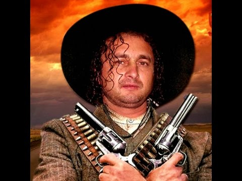
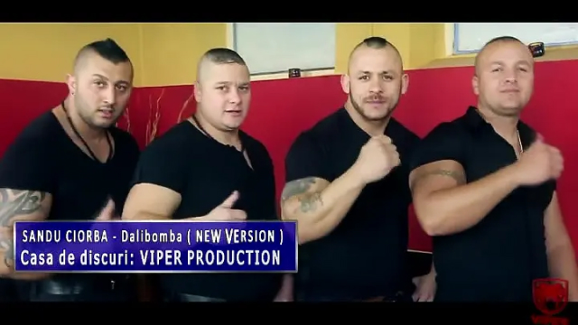
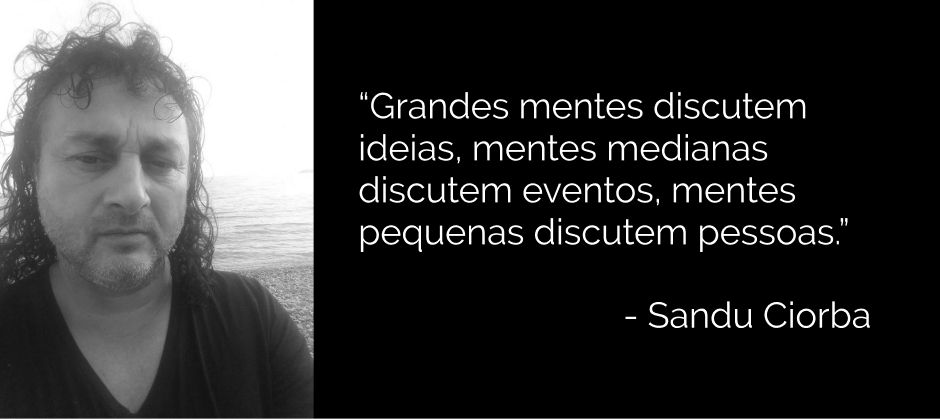

Criado por uma família humilde mas trabalhadora em uma vila remota na Romênia, Sandu teve poucas oportunidades de estudo. Durante sua adolecência, devido às dificuldades que a reforma agrícola e a desigualdade social causaram, Sandu acabou caindo no mundo do crime.

Foto de quando pertencia a uma gangue local.
Chamado na época de “O Bomba” pelos outros membros.
Depois de três meses na cadeia e precisar de um transplante de fígado depois de uma briga de gangues, sua vida parecia não ter salvação.
Tudo mudou quando, numa tarde, ele roubou um mp3 player e se deparou pela primeira vez com o que viria a salvar a sua vida: a música.
Inspirado, roubou instrumentos musicais e uma webcam e começou a postar vídeos no Youtube. No começo, sua música atraiu poucas pessoas, mas depois de um post no twitter, seu vídeo se tornou viral, passando um milhão de exibições em um dia.

Alguns membros da gangue se juntaram à banda de Sandu e abandonaram a vida do crime.
Hoje, Sandu é autor de sucessos como “Pe cimpoi”, “Jupanii”, “Lady”, “Ha, ha, ha te chelau” e “Au, au ,au inima mea”. Mesmo assim, não se esqueceu de suas raízes e procura encorajar de crianças à idosos na Romênia a abandonarem o mundo do crime através de sua música.
